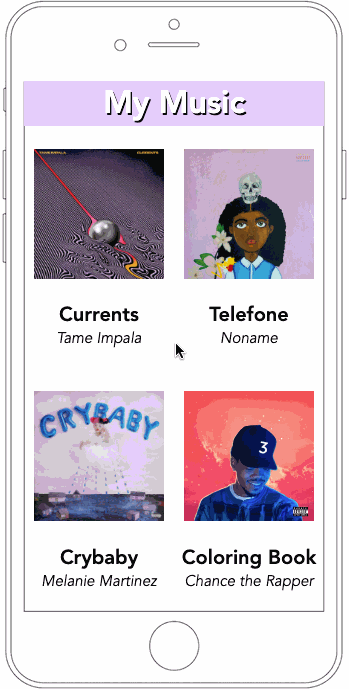

Music Player UI
Implemented front-end user interface of music player using JavaScript, HTML, and CSS
following WCAG accessibility guidelines.

Implemented front-end user interface of music player using JavaScript, HTML, and CSS
following WCAG accessibility guidelines.